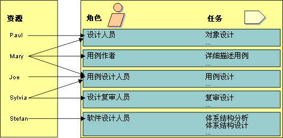

|
角色用于定义个人或一起工作的一组人在企业中的行为和职责。每个角色的行为都定义为一组任务。每个角色的职责通常是就某些工作产品（如文档）进行定义的。举例来说，角色有设计人员、软件设计人员和复审人员。角色通过一组相关的任务暗示了应具备的能力。
请注意，角色不是指个人，而是说明个人在企业中应该有怎样的行为以及这些个人承担什么职责。
项目一般可自行支配一定数目的资源，即具备特定能力的个人。例如，Joe、Marie、Paul 和 Sylvia
是几个具备不同能力（尽管部分能力有所重叠）的个人。使用在交付流程中确定的角色，将项目的可用资源与他们可以承担的角色一一对应。

将个人与角色关联是随时间动态变化的，影响因素有阶段在项目生命周期所处的位置以及要执行的工作。
-
个人在同一天可能会扮演数个不同的角色：例如，Sylvia 在上午可能是“复审人员”，而到了下午就可能是“用例设计人员”。
-
个人可能同时扮演数个角色：例如，Jane 可能同时担任某个类的“软件设计人员”和“设计人员”，并担任包含该类的程序包的“程序包所有者”。
-
几个人可以扮演相同的角色，作为一个团队一起执行某个任务：例如，Paul 和 Mary 都可以充当同一个用例的“用例设计人员”。
分配职责时，尽量避免在资源之间的工作产品交接：让同一个人或同一个团队设计并实施子系统，使他们不必重新了解他人已完成的工作。
当由同一个团队设计并实施时，从设计到实施的过渡就会很顺利。此外，它还使设计人员能更出色地工作：通过了解什么可行、什么不可行，他们就能更好地明白什么是好的设计，并将其用到未来的工作中。就像雕塑家一样，好的设计师必须了解用于表达的材料，而对于软件来讲，这种材料就是实施环境。
|